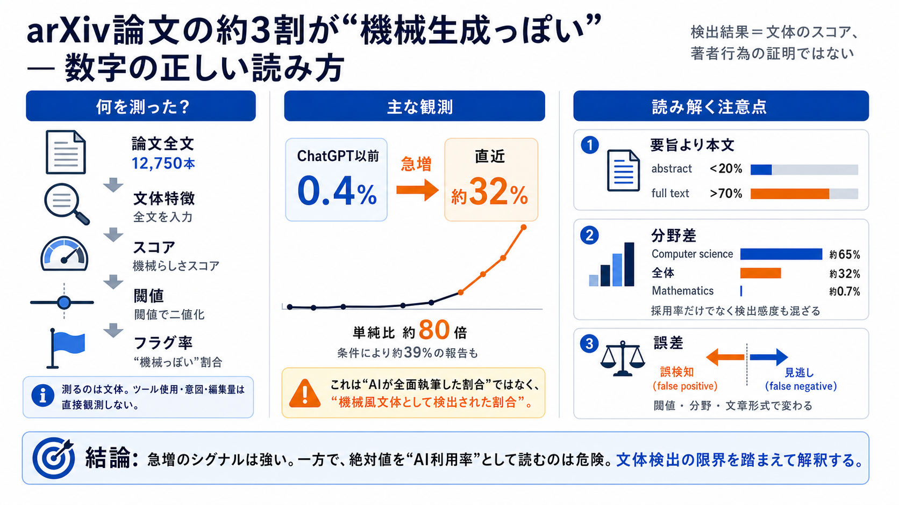

Observed
実際に観測したもの
全文の文体特徴をスコア化し、機械生成らしいパターンが強い論文をフラグした。

Machine-like writing on arXiv
12,750本を対象にしたAI文体検出調査は、ChatGPT登場後の急増を示した。ただし、測定しているのは著者の行為ではなく、文章全体に現れる「機械らしさ」である。
The headline trap
約32%という数字は「論文の32%をAIが全面執筆した」という意味ではない。検出器のスコアが設定閾値を超えた論文の割合である。
全文の文体特徴をスコア化し、機械生成らしいパターンが強い論文をフラグした。
使用ツール、プロンプト、編集量、著者の意図、執筆工程は測定されていない。
「AIが書いた割合」ではなく、「機械風文体として検出された割合」と表現する。
What the detector sees
detector（検出器）は文章の統計的特徴から確率やスコアを出す。その出力を閾値で二分し、集団全体のフラグ率として集計している。
散文、語彙、文構造など、本文全体に現れるパターンを対象にする。
スコアは連続値であり、著者のAI利用を直接示すラベルではない。
設定値を超えた論文をmachine-writtenとフラグし、その割合を報告する。
Study architecture
調査はarXiv論文12,750本をスコア化し、ChatGPT以前と登場後の変化を比較した。要旨だけでなく本文全体を使い、より強い文体シグナルを拾っている。
個別論文の告発ではなく、時系列と分野別の集団傾向を推定するためのサンプル。
2021〜2022年をChatGPT以前のcontrol（対照）として使用。
同じ検出ロジックで、以後のフラグ率の上昇を追跡。
abstractだけではなく、full body textを主な測定対象にする。
コンピュータサイエンスや数学など、領域別の差も集計。
Anchor the false positives
calibration（較正）では、2021〜2022年の論文が約0.4%だけフラグされるよう閾値を設定した。この基準線が、検出器固有の誤検知を読むためのアンカーになる。
ChatGPT以前のフラグ率を、想定上のfalse positive rate（誤検知率）として固定。
過去期間のフラグが0.4%になる位置を判定境界にする。
登場後も同じ境界を使い、時間変化を観測する。
検出器が常に高く出す癖だけでは、急増を説明しにくくなる。
過去データと現在データで、人間文体の分布が安定している必要がある。
Abstract versus full text
同一論文でもabstractでは20%未満、本文では70%超のスコアになりうる。短い要旨だけを測ると、AI文体の兆候を過小評価する可能性がある。
The central observation
ChatGPT以前は約0.4%で安定し、その後は急上昇して直近で約32%に達したと報告される。集計条件によっては約39%付近の値も示されている。
0.4%から32%への変化は、基準線に対して極めて大きい。
急増のシグナルと、正確なAI普及率の推定は分けて考える。
Large disciplinary gaps
コンピュータサイエンスは約65%、数学は約0.7%と、検出結果には極端な差がある。しかし、この差にはAI利用と検出感度の両方が混ざっている。
AIツールとの近さに加え、科学英語の散文が検出器に捉えられやすい可能性がある。
分野構成と各領域の検出感度を含んだ、集団レベルの観測値。
記号、定理、証明が中心で、散文向け検出器の感度が不足する可能性が高い。
Why mathematics looks different
out-of-distribution／OOD（分布外）とは、対象文書が検出器の学習した文章と大きく異なる状態である。数学論文の低値は、利用の少なさではなく感度不足でも説明できる。
検出器は主に、文章量の多い科学英語の散文特徴を学ぶ。
記号、数式、定理、証明の構造が本文の大きな割合を占める。
検出器が頼る語彙や文構造の手掛かりが少なくなる。
AI支援が存在しても、人間文として通過する見逃しが増える。
Two ways to be wrong
false positive（誤検知）は人間文を機械風と判定し、false negative（見逃し）はAI文を人間風と判定する。どちらの誤差が大きいかで、観測率の意味は変わる。
A conditional lower-bound claim
生成器やプロンプトの多様性を検出器が十分にカバーできなければ、見逃しが増えて観測率は下がる。その意味で約32%は保守的推定になりうるが、下限という解釈には条件がある。
What follows—and what does not
集団レベルの文体変化については強いシグナルがある。一方、単一論文の執筆工程や不正の有無までは、この測定だけでは導けない。
Two layers of uncertainty
bootstrap 95% confidence interval（ブートストラップ95%信頼区間）は、標本のばらつきを評価する。一方、検出器の偏りや分布外問題といった系統誤差は、信頼区間だけでは補えない。
論文サンプルを取り直したとき、推定率がどの程度変わるかを信頼区間で表す。
生成器、編集方法、分野による感度差は、再標本化しても自動では解消しない。
分野別のcontrolサンプルが小さい場合、領域ごとの誤検知率を精密に推定しにくい。
Four questions before believing a rate
数字の大小だけでなく、測定対象、較正、分野適合性、利用目的を順に確認する。この順序が、過信と過小評価の両方を防ぐ。
全文か要旨か、文体か執筆工程かを区別する。
対照期間と誤検知率、閾値設定を確認する。
散文、数式、言語などの分布差を確認する。
集団傾向、品質確認、個人処分を混同しない。
Detection is not accusation
検出器は著者の意図や作業履歴を示さず、誤検知も避けられない。個人攻撃や処分の根拠ではなく、透明性と品質向上のための補助情報として扱うべきである。
Toward better measurement
精度向上には、検出器をひとつ増やすだけでは足りない。分野別較正、複数モデル、利用申告、監査可能な評価データを組み合わせる必要がある。
数学、CS、生命科学など、文章形式ごとに誤検知率と感度を測る。
異なるモデルの一致と不一致を比較し、単一モデル依存を減らす。
翻訳、校正、生成などの申告情報を匿名集計し、実態との対応を測る。
生成器、編集量、分野が既知の資料で性能を継続評価する。
What remains unknown
提示された要約だけでは、検出器の内部設計や訓練データまで検証できない。以下の情報が揃えば、絶対値と分野差をより厳密に評価できる。
どの生成器、言語、科学分野を学習したか。
0.4%への較正手順、前処理、期間別の一貫性。
領域のグルーピング基準とcontrolサンプルの規模。
誤検知、見逃し、編集量、プロンプト混合別の性能。
Read the signal, not a verdict
この調査は、arXivで機械風文体が急速に増えた可能性を強く支持する。しかし約32%はAI利用の正確な普及率でも、特定著者への有罪判定でもない。
unslop is a lightning-fast CLI tool built in Zig that strips this "LLM accent," reverting fancy Unicode characters back …
You signed in with another tab or window. unslop strips the patterns that make writing read as machine-written, then reb…
It'll generate hundreds of sites and find 'slop' patterns, then build a skill to make sure they are NEVER seen again. Op…
AI-native software development services. Book a callJoin waitlist · Open Sourcenoodles 1,250+ stars →Featured inheavybit…
Introducing Unslop. Stop AI from generating slop. Ask it to unslop landing pages. It finds patterns and ensures they're …